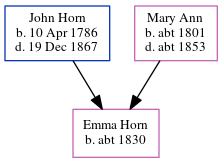

Rosetta Emily Culmer (née Crump) 1900 - c1947
[ Home ] | [ Calendar ] | [ Surnames Index ] | [ Errors ] | [ Family History ]Rosetta Crump, the wife of Charles Culmer (the first cousin twice-removed on the mother's side of Nigel Horne), was born in Margate, Kent, England on 15 Jul 19001,2,3. She married Charles (an agricultural labourer) in Thanet, Kent, England around Nov 19295.
During her life, she was living at 19 Setterfield Road in Margate on 31 Mar 19011 and at 4 Lydden Hill in Margate on 29 Sept 19392.
She died c. May 1947 in Thanet4.
Citations
- 1901 England, Wales & Scotland Census - Findmypast (was age 0 and the daughter of the head of the household)
- 1939 Register - Findmypast (was the wife of the head of the household)
- England & Wales births 1837-2006 - Findmypast
- England & Wales deaths 1837-2007 - Findmypast
- England & Wales Marriages 1837-2005 - Findmypast
Media
1939 Register Transcription - TNA-R39-1752-1752G-020-19
England & Wales births 1837-2006 - BMD/B/1900/3/AZ/000140/008
England & Wales marriages 1837-2005 - BMD/M/1929/4/AZ/000267/034
1901 England, Wales & Scotland Census - GBC/1901/0007427539
England & Wales deaths 1837-2007 - BMD/D/1947/2/AZ/000200/070
Family Tree
Map
Generated by ged2site. Last updated on Jul 3, 2024
Known Issues
No records of living with anyone